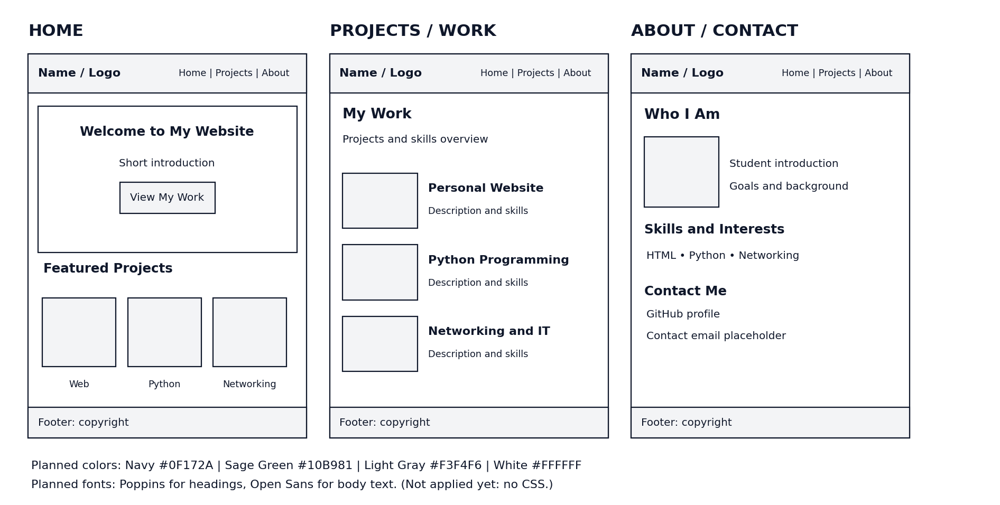

Why I Enjoy Web Development
I enjoy web development because it allows me to create something useful while learning how different parts of a website work together.
Learning, Growing, and Building My Future
Hello! My name is David Sime, and I am currently studying Information Technology. I enjoy learning how computers and technology work and how they can be used to solve everyday problems.
I also have experience in customer service, which has helped me develop communication, leadership, and problem-solving skills.

As I continue my education, I want to improve my skills in different areas of IT. Some of the topics that interest me include:
I enjoy web development because it allows me to create something useful while learning how different parts of a website work together.
Networking interests me because it helps me understand how computers communicate and share information.
My goal is to complete my associate degree in Information Technology and continue working toward a bachelor's degree. I also want to gain more hands-on experience in the IT field.
You can check out my projects and follow my progress on GitHub.